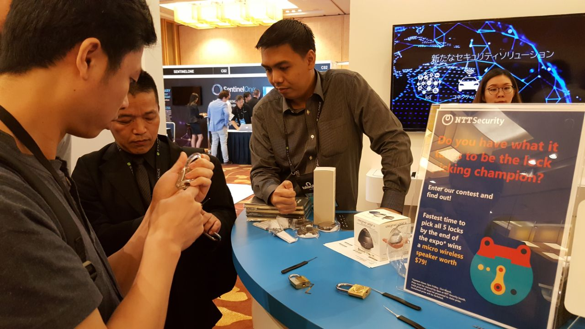

Black Hat nedir?
1997 yılından bu yana aralıksız sürdürülen, uluslararası boyutta siber güvenlik uzmanlarının, hackerların ve istihbarat elemanlarının katılım gösterdiği Black Hat konferansına Mart ayı sonunda katılma fırsatını yakaladım. Zira Mert Sarıca'nın da değindiği üzere bu konferanslara katılmak ve eğitim almak için ya çok paranız olması gerekiyor ya da sizi bu konuda destekleyen sponsorlarınız. Nitekim şanslıyım. Singapur'da bulunmamda yardımlarını esirgemeyen herkese teşekkür etmek istiyorum.
Singapur'a gitmeden günler öncesinde ilgili planlarımı yapmıştım. Dışişleri Bakanlığımız tarafından bu bağlantıda yaptığı açıklama üzerine pasaportumun bitiş süresini 1 sene daha uzattım. Gidiş-Dönüş uçak biletimin, konaklama faturalarımın, Black Hat biletimin çıktılarını alıp, hazır halde bulundurdum. Ek olarak Samsun'da Singapur Doları bulamadığımdan dolayı bir miktar paramı, Singapur'da ülke birimine dönüştürmek üzere euro para birimine çevirdim.
Bulunduğum şehirden doğrudan bir uçuş olmadığından dolayı Samsun - İstanbul - Singapur zinciriyle uçuşumu gerçekleştirdim. 4-5 saat kadar havalimanı beklemesi ardından Singapur uçağımız havalandı. Uzun ve yorucu bir uçuş olacağını biliyordum. Uçakta dağıtılan formları doldurup, havalimanından ayrılmadan teslim etmem gerekiyordu. Bol bol vaktim olduğundan dolayı iniş saatlerine yakın zamanda bu formu doldurdum. Yaklaşık 10,5 saat uçuşun ardından uçağımızın tekerlerini Changi Havalimanına koydu.
Singapur'a giriş öncesi
Güneydoğu Asya'nın en büyük havalimanları arasında bulunan Changi'den ayrılmadan önce uçakta doldurmuş olduğum formu teslim ettim. Fakat ilk kez Singapur'a gelmemden dolayı işlemlerim 45 dakika kadar sürdü. Bu süre içerisinde güvenlik personelleri tarafından ne iş yaptığım, ülkeye neden geldiğim, nerede konaklayacağım, çalıştığım yere ait personel kimliğine kadar bir çok şey soruldu. Nitekim günler öncesinde hazırlamış olduğum çıktıları göstererek ilgili arkadaşın işini bir nebzede kolaylaştırdım. İşlemlerimin bitmesinin ardından simkart için Simtel satışı yapan yeri aramaya başladım. Singapur'da kalacağım süreyi de göz önünde bulundurarak Singtel tarafından turistlere "15S$", "30S$", "50S$" paketler şeklinde sunulan bir simkart çıkardım. 30 Singapur dolarına satın aldığım bu hat bana 10 gün geçerli olmak üzere 14 GB internet, 90 dakika da uluslararası görüşme imkanı sunuyordu.Bu benim için yeterliydi. İlgili satış ofisini bularak ilgili sim kartı satın aldım.
Havalimanından Şehire
Akşam saatleri olması nedeniyle check-in zamanınını geçirmemek için taksi ile birlikte otele geçmek durumunda kaldım. Havalimanında taksiler için kavgaya veya kargaşaya yer vermemek için taksi istasyonu yapılmış.
Burada insanlar sıraya girerek sıradaki taksiye binip, havalimanından ayrılıyor. Saatinden biraz ilerlemiş olması sebebiyle bu kuyrukta çok fazla beklemeden taksiye binedilim. Yol boyunca çinli olduğunu öğrendiğim taksi sürücüsü ile sohbet ettik. Ülkenin çok temiz ve havalimanının büyüklüğünden bahsederken, sağda ve sol tarafta halen havalimanı terminalleri olduğunu gösterdi. Türkiye'yi duyup duymadığını sorduğumda İstanbul ile ilgili olumlu cevaplarını aldım. Taksici ile bu sohbetimiz Marina Bay Sand'in manzarasıyla bölündü. 25 dakikalık yolculuğun ardından 22:00 gibi otelime vardım. Çok yorgun olmama rağmen dışarı ufak da olsa keşfetmekten kendimi alıkoyamadım. Çok şanslıydım ki Chinatown yani Çin Mahallesine kaldığım otel çok yakındı. Pazar akşamı ve saatin epeyi ilerlemiş olması sebebiyle neredeyse tüm mağazalar kapatmıştı.
Yine keşif amaçlı metro hattını da ziyaret etmiştim. Çok geniş bir metro ağına sahip olan Singapur'da ulaşım oldukça kolay bir şekilde yapılabiliyor.
China Town ve Merlion Parkı
Yol yorgunluğunu kolay atlatamamış olmalıyım ki geç saatlerde uyandım. Hızlı bir kahvaltının ardından üstümü giyinip çevreyi keşife çıktım. Yakınlardaki Chinatown caddesini olabildiğince fazla gezdim. Çoğunlukla turistlerin ilgi gösterdiği bu alanda bol bol "3 for 10S$" gibi fiyat etiketleriyle karşılaştım. Ülkenize eliniz boş dönmemek ve ekonomik de olsun istiyorsanız kesinlikle ChinaTown'a uğramalısınız. Ben orjinalliğinden şüphe ettiğim fakat denemek amacıyla 2 adet 12.000'lik Powerbank (20 S$), USB kablosu (2,90 S$), terlik (2,90 S$), 5 adet magnet (5 S$), 3 adet çorap (2,90 S$) ve 2 adet saat (5,8 S$) satın aldım. Türkiye piyasasına göre çok uçuk fiyatlarda var, çok çok düşük fiyatlarda. Bu arada çok iyi pazarlık yapabilen biri değilimdir fakat olan girişimlerim de sonuçsuz kaldı. Israrla fiyatların fix olduğunu ve zaten ucuza sattıklarını söylediler.
Chinatown'daki gezimin ardından yine yürüme mesafesinde bulunan Merlion Parkına doğru yol aldım. Yaklaşık 45 dakika süren bu yolculuğumda binaların arasından Marina Bay Sand'i görmek mümkün oluyordu. Çevre ve yollar aşırı düzenliydi. Buradaki mimarlar, müteahhitler olabildiğince beton yapıtları yeşillerle örterek şehire ayrı bir güzellik katmışlar. Trafiğin ülkemize göre tersten (soldan) akmasına kısa zamanda alıştım. Kısa süreli akan trafiğin arkasından bakarak sağladım kontroller umarım beni gülünç duruma sokmamıştır :)
Marina Bay Sands
Şehrin çoğu noktasından sizlere hayranlıkla bakmanızı sağlayan bu yapıtın en üst katına çıkma şansına da sahip oldum. 56.katta Skypark, 57.katta ise sonsuzluk havuzu bulunuyordu. Sonsuzluk havuzuna yalnızca otel müşterilerinin kullanımına açıktı. Size sanki bir uçurumun kenarında yüzme hissi verecek olan bu deneyimi Singapur'a gelirseniz kesinlikle denemenizi öneririm.
Sentosa Adası
Sentosa bir başka deyişle söylemek gerekirse eğlence adası Singapur'un en çok turist ağırlayan noktalarından birisidir. Şehrinden herhangi bir noktasından HarbourFront istasyonunda inmeniz durumunda Sentosa Adasına ulaşabilirsiniz. Adaya ulaşmak için dilerseniz buradaki teleferik hatlarından ya da yürüyüş bandını kullanabilirsiniz. Olabildiğince yürüyüş parkurunu kullanmanızı öneririm.

Bu adada yapılabilecek seçenekler geniş. Dilerseniz Universal Stüdyolarında temasından düzenlenmiş olan büyük, geniş lunaparklarda vakit geçirebilir ya da beyaz kumsallarda yürüyüşler yapabilirsiniz. Benim tercihim beyaz kumsallarda yürümek oldu. Bunun için rotamı Palawan plajına çevirdim. Gerçekten çok harika bir kumsal sunan bu plaj aynı zamanda Asya kıtasının en güney noktası olması nedeniyle de ayrı bir ilgimi çekmişti. Turkuaz rengi suyuyla, beyaz kumsalıyla beni kendisine hayran bırakmayı başardı.
Black Hat başlıyor!
Black Hat maillerini dikkatle takip ediyordum. Etkinlik öncesinde tarafıma gelen e-posta da kaydımı Çarşamba gününden yapmam gerektiği, Perşembe gününde kalabalık olabileceği şeklinde bilgi iletiliyordu. İlgili e-postaya uyarak Çarşamba günü erken saatlerde Marina Bay'ın etkinliğin olacağı kısmına gittim. Görkemli bir sunum hazırlığı tamamlanmış görünüyordu. Hazırlanan bilgisayarlarda kayıt sırasında girmiş olduğunuz e-posta adresiyle sorgu yaparak yaka kartınızı çıkartabiliyorsunuz. Bu aşamasının gayet güzel olduğunu ifade edebilirim. Olabildiğince insan kaynağını doğru yerlerde kullanılmasına özen gösterilmiş olduğunu fark ediyordum.

Çoğunluğunu Asyalıların oluşturduğu bir güvenlikçi kitlesi gördüğümü ifade edebilirim. Ek olarak yine hatırlatmak gerekirse Türkiye'den sanırım tek katılımcı bendim. Türkiye'den geldiğimi ifade ettiğim tüm herkeste kısa süreli bir şaşkınlık ifadesi olduğunu söyleyebilirim.
İlk konuşma Google mühendislerinden Halvar Flake tarafından yapıldı. Neden güvenli internet inşa etmiyoruz temasıyla açılış konuşması niteliğinde bir sunum gerçekleştirdi.

Konuşmanın standartların aksine işlerin nasıl düzende yürüdüğümüzü sanıp, aslında da hiç de öyle olmadığını bize gösterdi.
Eş zamanlı gerçekleştirilen brifing sunumları için ilgi alanlarınıza yönelik bir takvim hazırlamanız sizler için daha faydalı olacaktır. Arsenal stantlarında Haoqi Shan tarafından sunulan Unicorn's RFID Armoury çok ilgimi çekti. Tüm Arsenal listesine buradan, brifinglerin listesine ise buradan ulaşabilirsiniz.
Business Hall'da ise çok sayıda firmanın stantları yer aldı. Rapid7'den RSA'ya Tenable'dan NTT Security'e kadar çok sayıda firma ürünleriyle birlikte gelen katılımcıları ağırladı.
NTT Security stantında katılımcılar Lock-picking deniyor. 
Özetle
Kısacası dolu dolu geçen bir Black Hat etkinliği oldu. Singapur'da gitmem de emeği geçen herkese çok teşekkürler. Bir başka güzel etkinlikte olmak dileğiyle.